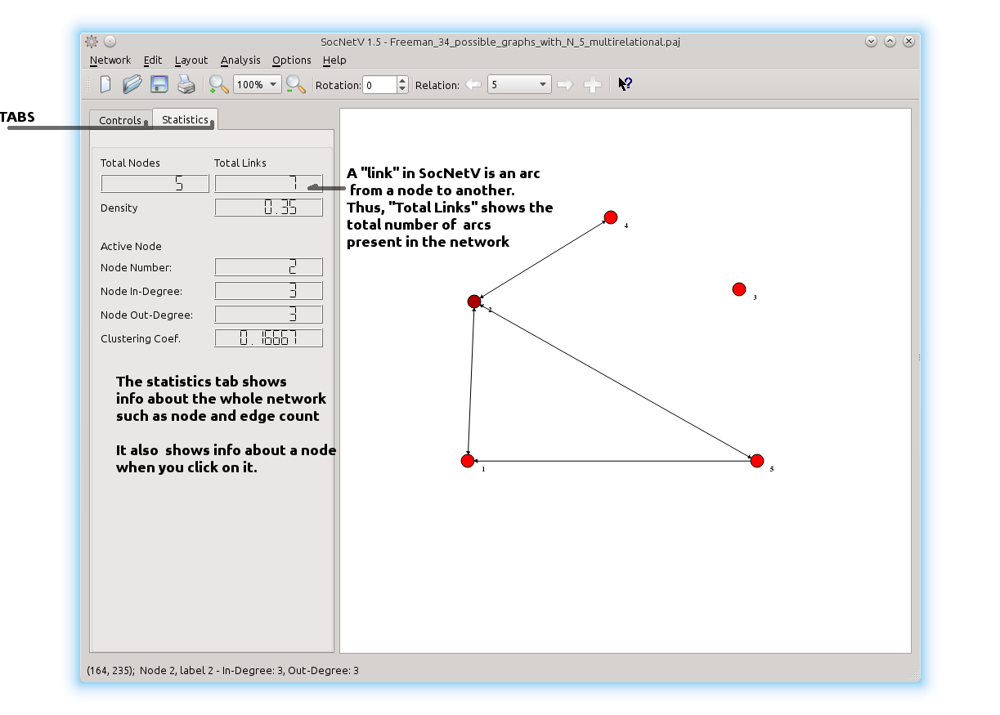

SocNetV has a simple Graphical User Interface (GUI) composed of:
At the top of the window, there is the menu bar, filled with commands and options, organized in 6 menus:
Below the menu, the toolbar provides the usual icons: new network creation, load a network, save, zoom in-out, rotate, switch between relations (or add a new one) and display help messages for the menu options.
The middle part of the window is occupied by the dock/toolbar (left-side) and a virtual "canvas" (right-side) where network nodes and edges appear.
The toolbox, on the left of the window, has two tabs: Controls and Statistics. At the top of the Controls tab there are 4 buttons to edit the network (add/remove node, add/remove link). Below them, there are two groups of options to Analyze and Visualize the loaded network. In the Analyze group, options are categorized in four submenus:

In the Visualize group, there are menus and checkboxes to apply visualization
layouts to the current network.
With one click, SocNetV can visualize the network in intuitive ways:
Finally, at the end of the toolbox there are options to toggle node sizes according to their inDegree/outDegree and enable/disable layout guidelines.
The Statistics tab is mainly occupied by informative LCDs. These display statistics for the active network (i.e. node and edges counters, density, counters of inLinked/outLinked nodes, etc) as well as the selected node (its number, in-Links and out-Links).
The canvas is the main area of interaction. The initial background color is set to "white", but you can changed it from the Edit -> Colors menu. Below, we describe how to work with SocNetV.
To start working with SocNetV you need network data, i.e. a graph of nodes (vertices) and links (edges).
SocNetV enables you to create networks with point and clicking on the canvas or load them from files.
There are multiple ways to create or edit nodes and links in SocNetV:
To create a new node, you can double-click on the canvas or click on the "Add node" button. The keyboard shortcut is Ctrl+A.
You can move a node by left-clicking on it and moving the mouse. Right-click on a node to display a context menu with options to delete it, add link, change label, size or color etc.
All nodes by default are accompanied by their node number.
If you want to display the labels as well, enable the option in the menu Options -> Node -> Display Labels.
Note: In large networks, it is sometimes difficult to locate a specific node.
In such cases, you can press Ctrl+F to find a desired node (by nodenumber or label).
SocNetV will highlight that node for you. Press Ctrl+F again to undo this.
To create a new link, middle-click on the source node and then middle-click again on the target node (or press Ctrl+L or the toolbox button). By default, all links created this way are weighted 1.
If your mouse doesn't have middle button (did you try pressing the mouse wheel?), or you find it difficult, you can right-click on the source node, then select "Create Link". In the dialog, just enter the target node number and the desired link weight. Alternatively, you can click on the "Add link" button from the dock. In that case, you will be asked for both the source and the target node numbers (and the link weight). The keyboard shortcut for this action is Ctrl+L.
Link Creation Example: Say you created two nodes, numbered 1 and 2, on the canvas. To create a new link from node 1 to node 2, middle click on node 1 (the mouse pointer will become a hand) and afterwards middle-click on node 2. A new link will be drawn instantly. If you want an edge (double link) repeat the process from node 2 to node 1.
Remember, each link you create this way has the default weight 1 and black colour.
Right-click on an edge to display a context menu with options to delete it, change weight, color etc.
Note: When you click on an edge, SocNetV highlights the source and target nodes for your convienience. Click again the edge to undo this.
The first time you create a link in your network, the application asks you to enter a name (or label) for the new relation between actors/nodes.
A relation is a collection of ties of a specific kind between the network actors.
For instance, you might want to label a relation "friendship" if the edges between nodes refer to the set of friendships between pairs of actors.
Starting from version 1.3, SocNetV supports multirelational networks, that is networks with ties of different kind between actors.
You can add more relations to your network by pressing the + button in the toolbar.
You can switch between relations by clicking the previous and next arrow buttons in the toolbar.
Please note that while modifying a multirelational network, you can add more nodes but you may not remove a node from the network. And each time you save a network, SocNetV saves the active relation only. You can save another relation by moving to it and then save again to another file.
As mentioned earlier, you move any node by left-clicking and dragging it.
If you want to select more than one node, press and hold down the left mouse button on the canvas. By moving your mouse, a rectangle will be drawed. All nodes inside this rectangle will be selected the moment you release the mouse button.
Warning: in networks with thousands of edges, the group selection process is dramatically slow...
When you right-click on a node, a context menu appears. From there you can remove the node, change its color, label, size as well as its shape. A similar menu appears when you right click on a link.
SocNetV supports many kinds of node shapes, i.e rectangles, diamond, ellipse, circle, etc. To change the shape of a node, right-click on it and in the context menu select Options > Change shape to...
The easiest way to start working with SocNetV is when you have already a network in a supported format (see Formats).
For instance, you might have another program (for example a simulation) creating adjacency networks which you want to visualise. In that case, from the SocNetV's menu go File > Load. In the dialogue that will appear, navigate to the desired folder and select the appropriate network file. SocNetV will automatically recognise the format and, if it is supported, it will visualise the network.
To save the active network, just press Ctrl+S or click on the menu entry File > Save. By default, it will be saved in GraphML format.
If you like, you can export it to another supported format (menu Network > Export To). Note that some formats are supported only for loading - not for saving.
Note: Each time you save a network, SocNetV saves the active relation.
The adjacency matrix of a network is a matrix where each element a(i,j) is equal to the weight of the link from node i to node j. If the nodes are not connected, then a(i,j)=0.
To view the adjacency matrix of a network, press F6.
By default, SocNetV displays the adjacency matrix as integer-valued only (although we do allow float weights).
SocNetV can create a random network for you. At the moment, it can create the following types of random networks:
SocNetV creates small worlds using the Watts and Strogatz model.
According to that model, a 'small world' is a random network with short average path lengths and high clustering.
Given the desired number of nodes N, the mean degree K (assumed to be an even integer),
and a special parameter \( \beta \), satisfying \( 0 \le \beta \le 1 \)
and \( N\gg K \gg \ln(N)\gg 1 \), the model constructs an undirected graph with N nodes and
\( \frac{NK}{2} \) edges in the following way:
From the menu Network select Create Random Network > Small World (or press Shift+W).
You will be asked for the number of nodes N, their mean degree K and a rewiring probability \( \beta \).
According to G(n, p) model (Erdos-Renyi), a random network is created by connecting nodes randomly.
Each edge is included in the graph with equal probability P, independently of the other edges.
From the menu Network select Create Random Network > Erdos-Renyi (or press Shift+R).
You will be asked for the number of nodes and an edge probability.
Ring lattices (or physicist's lattices) are 'random' networks where all nodes are positioned in a ring.
Each one has the same even degree (number of edges) d with her "neighbourhood", namely she is linked with the d/2 nodes before and d/2 nodes after her.
For instance in a 4-lattice of 10 nodes, node 6 will be linked with 4, 5, 7 and 8.
To create a ring lattice network click Network > Create Random Network > Ring Lattice (or press Shift+L).
You will be asked for the number of nodes and the degree of each node.
These are random network where each node have the same number of "neighbours", aka the same degree d.
Nodes are arbitrarily linked with each other other.
SocNetV includes a simple web crawler, which consists of two parts: a spider and a parser.
The spider visits a given initial URL (i.e. a website or a webpage) and downloads its HTML code.
The parser scans the code for 'href' links to other pages (internal or external)
and adds them to a queue of URLs (called frontier).
As URLs are added in the queue, the spider visits them and downloads their HTML
which is scanned for more links by the parser, and so on...
The end result is the 'network' of all visited webpages as nodes and their real links as edges.
Please note that the parser searches for 'href' links only in the body section of the HTML code.
To start the web crawler, go to menu Network > Web Crawler or press Shift+C. A dialog will appear, where you must enter the initial web page (seed).
You can also set the maximum nodes/pages (default 600) and what kind of links to
crawl: internal, external or both.
By default the spider will crawl both internal and external links.
To print the network directly to your printer, press Ctrl+P.
Keep in mind, that SocNetV follows the "what you see is what you print" principle:
we print what is viewable in the canvas, i.e. if you zoom-in to a network, the application will only print that specific network portion. So, you might need to zoom-out enough so that the whole network is viewable and therefore printable.
Except printing, you can export your work into raster (BMP and PNG) images, as well as PDF documents. The latter are vector-based, and therefore offer the best quality. Again, keep in mind the rule "what you see is what you print".